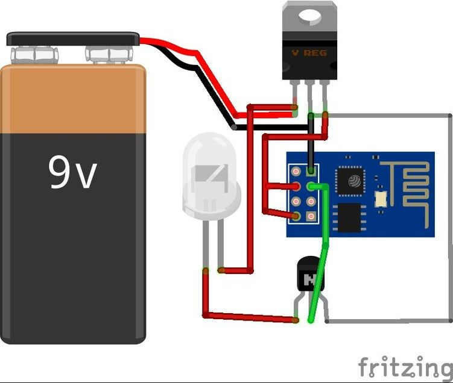
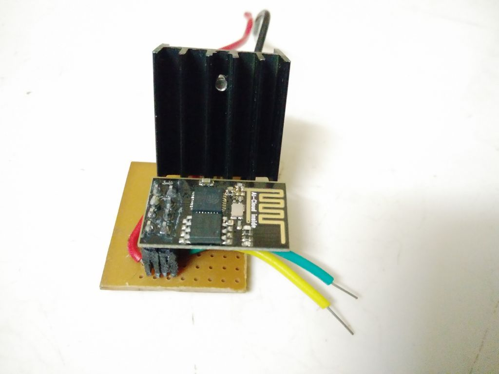

This is one of those old project that I took up when in college. IoT was all the trend (still is) and Espressif's low power low cost Soc ESP8266 was picking up a lot of attention. This Microcontroller/Soc was great since it comes with WiFi onboard and the form-factor very small, and works with arduino framework.
By harnessing the power of Internet services, free tools and open source software, this project hacks together a system of SmartLights. The main features of this project -
- Set Alarms to wake you up with light instead of sound.
- Set Timers on your smartphone to dim or turn off light automatically.
- Link your social media to smartlights and get visual notifications on preset activities, like a facebook photo tag or a tweet with hashtag or so on.
Code
Schematics


More Details
This article is just a bookmarker for the actual project link available at the end of this page. Please follow that link for more detailed how-to on making your own smartlights.
SmartLights - ESP8266 and Led Strip
SmartLights - ESP8266 and Led Strip: SmartLights is a simple way to automate your home lighting.Unlike Phillips Hue and other commercial devices, SmartLights is economical and easily customisable .The project requires some technical skill, but they are fairly simple and can be easil...